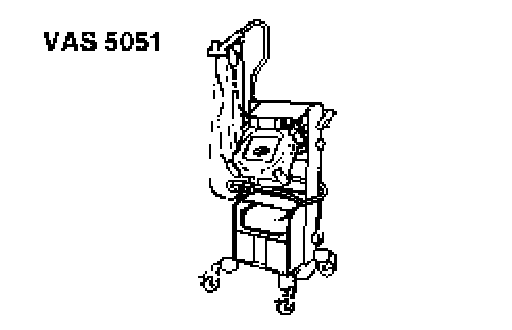
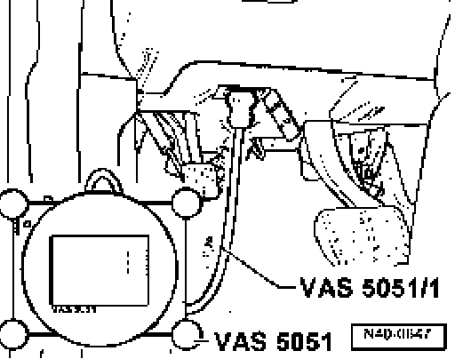
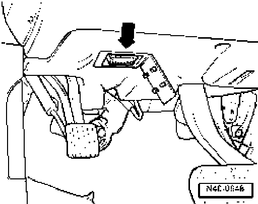

Steering and Suspension: Testing and Inspection
Connecting VAS 5051 and selecting functions
Special tools, testers and auxiliary items required

- Vehicle diagnosis, testing and information system VAS 5051/

- Diagnostic cable VAS5051/1
Caution!
- During a test drive you must always secure testing and measuring equipment on the back seat
- These devices may be operated only by a passenger during a test drive.

- Connect diagnosis cable connector VAS 5051/1 or VAS 5051/3 to diagnosis connection. N40-0648
- Switch on tester (arrow).
The tester is operationally ready when it displays a picture of a car.
- Switch on ignition.
- Touch button/field for "Guided Fault Finding" on screen.
- Select one after another
^ Brand
^ Type
^ Model year
^ Version
^ Engine code
- Confirm data entered.
Note:
^ Wait until tester has checked all control modules in vehicle.
^ Press Go to button and select "Function/component" function
Note:
^ Now follow information given on screen to start the desired functions.